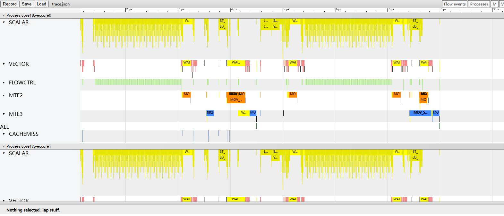
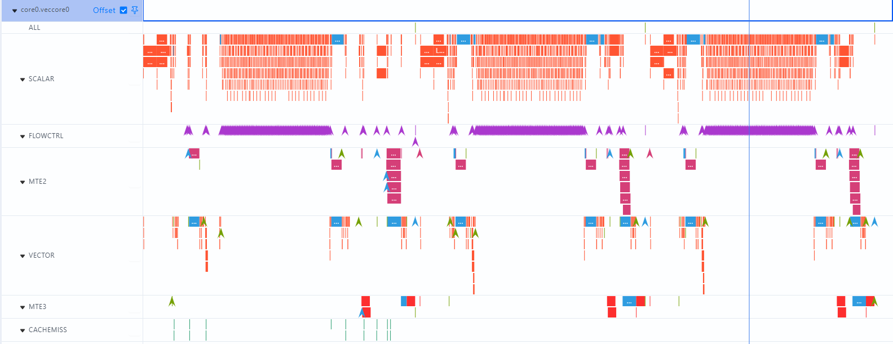
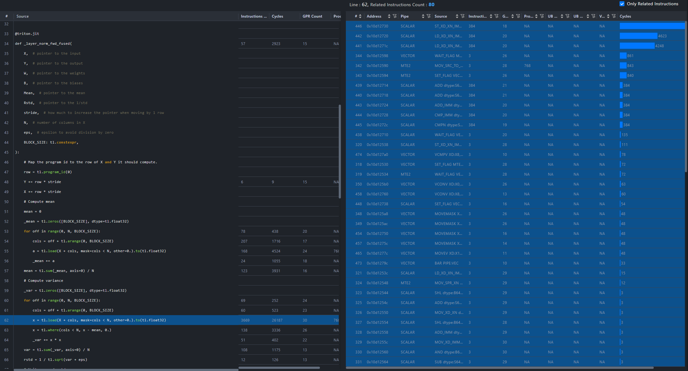
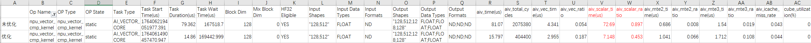

Triton-Ascend Performance Analysis Method
Obtaining Performance Data
Before performance optimization, you need to obtain accurate performance data, understand the current performance status, and analyze the next optimization direction based on the current performance status. MindStudio provides multiple methods for testing the performance of the Triton operator, including board profiling and single-operator performance simulation pipeline.
Board Profiling
The msProf performance analysis tool is used to collect and analyze key performance metrics of operators running on Ascend AI Processors. You can efficiently locate software and hardware performance bottlenecks of operators based on the output performance data, thereby enhancing the overall efficiency of operator performance analysis.
Note: The msProf tool depends on the msopprof executable file in the CANN package. The interface functions in this file are the same as those in msprof op. This file is provided by the CANN package and does not need to be installed separately. For details about common msProf commands, see Common msProf Commands.
The following command is an example of collecting performance data of an operator on a board. You can flexibly combine and configure parameters as required. In the example, –output is an optional parameter for specifying the path for storing the collected performance data. –kernel-name is an optional parameter for specifying the performance data of a single kernel to be collected. If you want to collect the performance data of all operators, you do not need to specify –kernel-name. $HOME/projects/test_op.py is the executable script of the operator.
msprof op --kernel-name=target_kernel_name --output=$HOME/projects/output python3 $HOME/projects/test_op.py
The following uses the 03-layer-norm.py test case as an example (the generated data file is saved in the current path when if –output is not specified):
msprof op --kernel-name=_layer_norm_fwd_fused python3 03-layer-norm.py
Note: For details about the result data of all the following collection items, see op_summary (Operator Details) in the CANN Performance Optimization Tool User Guide. Figure 1 PipeUtilization.csv (ratios of time taken by compute units and MTEs)

Operator Simulation Pipeline Diagram
The operator optimization tool msProf supports profile data collection and automatic parsing in a simulation environment. For details about how to obtain the simulation pipeline diagram by using the msProf tool, see Pipeline diagram.
The command for generating the operator simulation pipeline diagram is similar to that for collecting operator board performance data. The preceding 03-layer-norm.py is used as an example. --soc-version is used to specify the hardware version of the current machine. You can enter npu-smi info in the terminal to view the hardware version.
# Path of the source simulator
export LD_LIBRARY_PATH=/root/CANN/Install_CANN/Ascend/ascend_toolkit/latest/tools/simulator/{soc-version}/lib:$LD_LIBRARY_PATH
# Collecting the operator simulation pipeline diagram
msprof op simulator --kernel-name=_layer_norm_fwd_fused --soc-version={soc-version} python3 03-layer-norm.py
Note: In the preceding example,
soc-version=Ascend910B3.
|Soc-Version| | :—: | :—: | :—: | |Ascend910A|Ascend310|Ascend310B1| |Ascend910B|Ascend310P1|Ascend310B2| |Ascend910B1|Ascend310P2|Ascend310B3| |Ascend910B2|Ascend310P3|Ascend310B4| |Ascend910B2C|Ascend310P4|-| |Ascend910B3|Ascend310P5|-| |Ascend910B4|Ascend310P7|-|
The following two files save the obtained performance data:
trace.json
visualize_data.bin
The trace.json file supports the following two visualized display modes:
Chrome browser Enter the
chrome://tracingaddress in the address box of the Chrome browser, drag the instruction pipeline file (trace.json) generated by msprof op simulator to the blank area, and press the shortcut keys on the keyboard (W: zoom in; S: zoom out; A: move left; D: move right) to view the file. Figure 2 Timeline page on Chrome
MindStudio Insight visualized display MindStudio Insight provides the running status of instructions on the Ascend AI Processor in a sequence diagram. Users can identify the sequence optimization points of micro instructions by analyzing the instruction details, instruction execution time, call stack of the code associated with the instruction, and synchronization lines between instructions and pipelines in the sequence diagram. Figure 3 Timeline page on MindStudio Insight

The visualize_data.bin file can be visualized on MindStudio Insight.
In addition to collecting performance data like trace.json, visualize_data.bin also provides an instruction association dashboard corresponding to the source code (for example, 03-layer-norm.py). Figure 4 MindStudio Insight-visualize_data.bin instruction association
Note: For details about the result data of the following collection items, see Operator Optimization in MindStudio Insight.

Analyzing Performance Data
Theoretical Parameters
The theoretical performance is the ideal objective of the actual performance of the operator. Different hardware platforms have different hardware specifications. Theoretical performance helps us understand the potential of hardware and set performance optimization objectives.
Theoretical time required for transfer-related pipelines (such as MTE1, MTE2, and MTE3) = Data volume (unit: byte)/Theoretical bandwidth. For example, if the peak GM bandwidth of an AI processor is about 1.8 TB/s, the theoretical time required for transferring a float-type matrix of size 4096 x 4096 is sizeof(float) x 4096 x 4096/1.8 TB/s = 37.28 μs (calculated based on 1 TB = 1012 Byte).
Note:
If multiple transfer instructions exist at the same time, the bandwidth is shared. Data cannot be moved at a rate close to the theoretical bandwidth. For example, if the MTE2 and MTE3 read and write the GM at the same time, the time consumed by the transfer pipeline is (MTE2 transfer volume + MTE3 transfer volume)/GM bandwidth.
The bandwidth usage (effective bandwidth/theoretical bandwidth) varies according to the size of data blocks to be transferred. If the amount of data transferred each time is small, the actual performance cannot reach the theoretical bandwidth.
Theoretical time required for compute-related pipelines (such as Cube, Vector, and Scalar) = Data volume (unit: element)/Theoretical computing power. For example, if the theoretical peak computing power of a certain AI processor for float data type vectors is 11.06 TOPS, the theoretical time required for performing a single instruction computation of 32K float elements is 32K/11.06 TOPS = 0.003 μs (calculated based on 1K = 1000).
Locating Bottlenecks
After the performance data is obtained, processes that deviate significantly from theoretical values or consume excessive time are identified as “bottlenecks.” The following describes how to find bottlenecks and corresponding optimization directions based on performance data.
Method 1: Use board profiling to analyze the pipeline. View the op_summary_*.csv file parsed by board profiling to analyze the pipeline. Note that “*” indicates the timestamp.

In ideal cases, the utilization rate of each pipeline should be 100%. Any pipeline falling short of this target represents room for improvement. The preceding figure shows the data obtained from an AI processor. In the first scenario of the Vector operator _layer_norm_fwd_fused, the Vector pipeline utilization aiv_vec_ratio is less than 10%, indicating that the computing power is not fully utilized. The Scalar pipeline utilization aiv_scalar_ratio is about 60%, indicating that Scalar is the longest pipeline.
When Scalar is the longest pipeline, analyze whether complex operations are performed on scalar values in the operator source code. The SIMD microarchitecture of Ascend is more suitable for multi-data parallel computing. Another possibility is that the Triton software stack degrades vector computing to scalar computing because some instructions do not support specific data types on the hardware. Optimization should involve both pipeline and scalar optimization methods. For details, see method 3 to view the simulation pipeline diagram and method 4 to view the code hotspots for further analysis.
For more general cases such as MTE2 data transfer and actual scenarios: The shapes of the three input matrices are (128,128), (128,1), and (128,1), respectively, and the data type is float16. The current algorithm uses the two-pass method. Therefore, X is moved in for three times, and W and B are moved in for one time. The total amount of data to be transferred can be calculated accordingly. The theoretical value calculated based on the method described in the Theoretical Parameters section is sizeof(float16) (128 128 * 3 + 128 + 128)/1.8 TB/s ≈ 0.1991 μs (calculated based on 1 TB = 1012 Byte), which is greatly different from the actual performance data aiv_mte2_time. Analysis shows the total input size is smaller than the Unified Buffer (UB) capacity (192 KB for the A2 model). Therefore, if the MTE2 time is excessive, the basic block obtained through tiling computation may be too small, triggering redundant transfer instructions. In this case, pipeline optimization and tiling optimization are required, you can refer to method 3 to view the simulation pipeline diagram and analyze each pipeline for further analysis.Method 2: Use board profiling to analyze the tiling. The AI processor used in the previous example has 48 vector cores. The _layer_norm_fwd_fused operator is a pure vector operator. However, in some scenarios, too many blocks (Block Dim > 48) are delivered, causing excessive host scheduling overhead. In this case, the next step is to optimize the tiling.
Method 3: Use the simulation pipeline diagram to analyze the pipeline.

The preceding figure shows the data obtained from an AI processor simulator. It can be seen that the SCALAR and FLOWCTRL instructions of the Vector core are saturated. You can analyze the operator logic to check whether there are too many scalar computations and unsupported vectorization operations. The next step is to optimize scalar computation. On the other hand, the related pipelines (such as MTE2 and VECTOR of veccore0) of the Vector core are regularly interrupted, that is, there are a large number of blank segments without operations. You can analyze the operator logic to check whether the stream interruption is caused by small basic block splitting. The main optimization direction is pipeline optimization. In addition, the vector pipeline utilization is further improved using tiling optimization and memory optimization.Method 4: Analyze the code hotspot.

The preceding figure shows the data obtained from an AI processor simulator. The load interface on the left corresponds to a group of assembly instructions on the right (only instructions related to code lines are displayed and sorted in descending order by cycle count). The high proportion of scalar instructions is inconsistent with the scenario where the MTE proportion should be high when load is used as the memory access interface. Therefore, the main optimization direction is scalar calculation.
Example: i64/i32 Comparison Failing to Vectorize on NPU, Leading to Scalar Fallback
[Description] The i64/i32 comparison (cmp) cannot enable Vector on the NPU, causing them to degenerate into scalar computation and reducing efficiency. The i64/i32 cmp is converted to fp32 to accelerate vector operations by using vec_cast and vec_cmp. [Note] When cmp is used within a mask in tl.load or tl.save, the compiler can typically auto-vectorize the operation. In this example, tl.where requires manual intervention to ensure vectorization.
import triton
import triton.language as tl
@triton.jit
def npu_vector_cmp_kernel(
X, # [Tensor] input tensor (row x col)
Out, # [Tensor] output tensor (row x col)
Mean, # [Vector] mean tensor (row, ) of X
Rstd, # [Vector] std tensor (row, ) of X
stride_x_row, # [Scalar] stride of row in X
stride_out_row, # [Scalar] stride of row in Out, normally equals to stride_x_row
M, # [Scalar] row number
N, # [Scalar] col number
eps, # [Scalar] epsilon to aviod division by zeros
BLOCK_M: tl.constexpr,
BLOCK_N: tl.constexpr
):
"""
an example of layernorm to checkout Vector Cmp
Out = ((X - E[X]) / sqrt(V[X] + eps)) on dim -1
just for easy case, we assume that:
1. BLOCK_N >= X.shape(-1), group_n = 0 only
2. BLOCK_M = 1, group_m = range(0, row, 1)
"""
group_m = tl.program_id(0)
group_n = tl.program_id(1)
row = group_m
# calculate index & offset
Mean = Mean + group_n * M
Rstd = Rstd + group_n * M
X = X + row * stride_x_row + group_n * N
Out = Out + row * stride_out_row + group_n * N
cols = tl.arange(0, BLOCK_N) # cols is int64
x = tl.load(X + cols, mask=cols < N, other=0.0).to(tl.float32)
# calculate mean & rstd
mean = tl.sum(x, axis=0) / N
tl.store(Mean + row, mean)
- xbar = tl.where(cols < N, x - mean, 0.0) # N is a scalar value.
+ # change cols(i64) into cols_cmp(f32) to enable vector processing
+ cols_cmp = cols.to(tl.float32)
+ xbar = tl.where(cols_cmp < N, x - mean, 0.0)
var = tl.sum(xbar * xbar, axis=0) / N
rstd = 1 / tl.sqrt(var + eps)
tl.store(Rstd + row, rstd)
# calculate Out
mask = cols < N
out = (x - mean) * rstd
tl.store(Out + cols, out, mask=mask)
Example Data comparison before and after optimization

According to the data in the figure, the values of aiv_scalar_time (in μs) and aiv_scalar_ratio before and after optimization are greatly different, indicating that the performance is poor due to many scalar operations. You can obtain visualize_data.bin by collecting the operator simulation pipeline diagram. Then, use MindStudio Insight to parse visualize_data.bin. It is found that xbar = tl.where(cols < N, x - mean, 0.0) contains many scalar operations, which can be reduced through the preceding optimization.